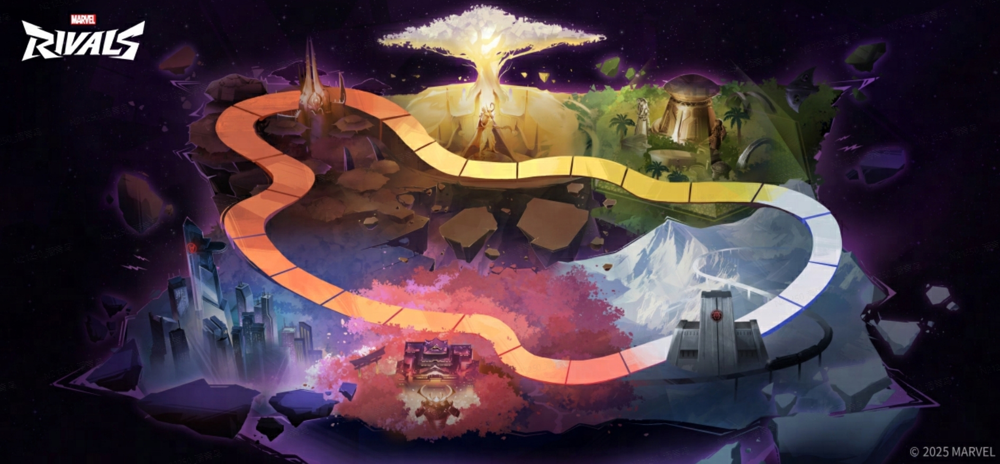

Greetings, Rivals!
We're thrilled to announce that the upcoming patch drops on March 6, 2025, at 09:00:00 AM (UTC+0)! As usual, this update will be applied without server downtime—so you can dive right back into your epic battles as soon as the update is live!
Special Event: Galacta's Cosmic Adventure
Prepare for an exciting new event, Galacta's Cosmic Adventure, launching on March 7, 2025, at 01:00:00 AM PT!
Join the adventure to earn the exclusive Black Widow - Mrs. Barnes series costume rewards—completely FREE!
Event Duration: March 7, 2025, 01:00:00 AM PT - April 11, 2025, 01:59:59 AM PT

All-New Mode: Clone Rumble
Dive into the Clone Rumble, a fresh gameplay mode where you and your teammates choose from the same heroes to battle together!
Assemble your impossible team and unleash the full potential of each character to claim victory.
Event Duration:
- March 7, 2025, 1:00:00 AM PT - March 10, 2025, 2:00:00 AM PT
- March 14, 2025, 2:00:00 AM PT - March 17, 2025, 2:00:00 AM PT
- March 21, 2025, 2:00:00 AM PT - March 24, 2025, 2:00:00 AM PT
Optimizations
- Improved the Human Torch's Lord Proficiency avatar reward
- Added a voice enhancement setting for the microphone
- You can now report those who leave matches prematurely via the menu while still in a match
Fixes
General
- Fixed an issue where switching from a Proficiency Deluxe Avatar back to the standard Avatar required a re-login to take effect
- Resolved an issue where other players viewing a career profile would not immediately see the latest scores added after reaching maximum proficiency with a hero
- Corrected the blocklist full notification, which mistakenly stated that the friends list was full
Maps and Modes
- Fixed several terrain issues that could cause characters to become stuck or clip into strange areas
- Resolved various problems with broken collisions, floating objects, etc.
- Addressed multiple map sound effect issues
Heroes
Loki
- Fixed an issue where Loki's UI would vanish after he transformed
- Fixed a problem where if Loki and his doppelganger placed Regeneration Domains that overlapped and Loki walked over the overlapped area, then back into his own Regeneration Domain, it would lose its healing effect
Human Torch
- Resolved a glitch where the Human Torch's Flaming Meteor ability could sometimes trap hit enemies inside walls
- Fixed an issue that the Human Torch's Pyro-Prison wouldn't promptly disappear upon his defeat
Punisher
- Addressed a rare issue where the Punisher's Ultimate Ability would sometimes continue to detect enemies and fire missiles during network disruptions
Hela
- Resolved an inconsistency where Hela would sometimes be launched up after unleashing her Ultimate Ability
- Fixed an issue where after Hela releases her Ultimate Ability, sometimes she may not be immediately detected when near the mission vehicle
Wolverine
- Fixed a quirk where characters launched up by Wolverine's Ultimate Ability would sometimes exhibit exaggerated jumping abilities
Jeff the Land Shark
- Corrected a bug where when the Team-Up Ability is active, Jeff could launch Frozen Spitballs that exceed expectations via certain actions
Adam Warlock
- Resolved a problem where if Adam Warlock's Ultimate Ability failed in certain areas (like cliff edges), 50% energy wouldn't be returned
Peni Parker
- Fixed a positioning issue that could sometimes occur when Peni was hit by Namor's Ultimate Ability
Platform-Specific Fixes
PC
- Fixed an issue where some graphics cards couldn't enable Intel XeSS
Console
- Fixed an issue where after modifying the mapping of the controller's L3 button, the chat window could not be opened on the results screen
- Resolved a rare issue on PlayStation where Wolverine's Rage Uncaged trophy sometimes wouldn't unlock